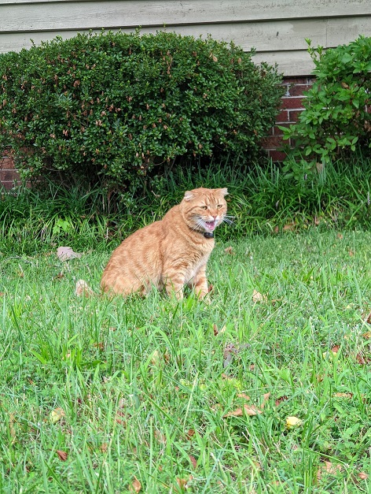

ERNIE

-
BioErnie is a small orange Scottish fold. He has one brother - Beebo.
-
PersonalityErnie meows a lot. He is a very elusive cat (hence the sparing number of pictures), but acts like he's known me forever whenever I do see him.